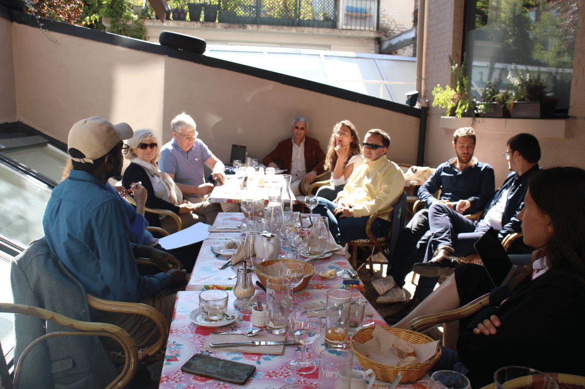
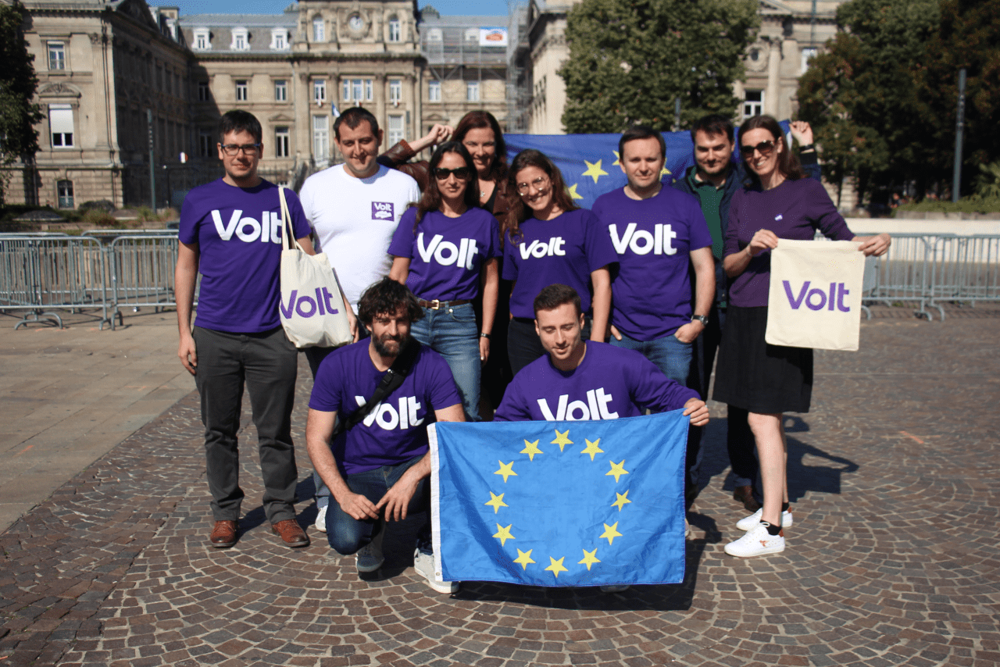
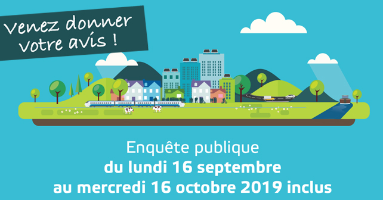

Volt Lille Bulletin, Semaine 37
Bonjour à tous et à toutes,
Une semaine courte et bulletin tardif après notre assemblée et le week-end pour le climat et la justice sociale juste devant. Tout est bien passé et en plus je suis élu dans le nouveau bureau élargi de Volt France. Un peu plus de travail, mais aussi un peu plus de perspective à donner. Le reste en dessous.
Bonne lecture,
Sven
1. Volt - qu'est-ce qui se passe ?
L'assemblée générale

Débat Dejeuner
Nouveau bureau. Nouveaux statuts. Nouvel esprit. Le week-end et notre assemblée sont passés vites et avec beaucoup de sourires. Entre nos discussions comment créer un mouvement qui valorise les contributions de chacun, notre brainstorming pour les élections municipales et stratégie nationale, nous avons eu aussi le temps à guider nos visiteurs français, belge, allemand et espagnol des différents sites européens dans nos coins favoris de Lille. Il reste beaucoup à faire, mais ces trois jours ont mis du vent dans nos voiles violettes.

Balade à Wazemmes
Enquête Publique SRADDET

Donnez vos avis ! C'est votre futur qu'est en cours d'être discuter
Cette semaine marque l'ouverture d'enquête publique pour le SRADDET (schéma régional d'aménagement, de développement durable et d'égalité des
territoires). Nous étions occupés avec les projets qui font Lille, jusqu'à lundi (mis en jour ici), mais maintenant nous voulons nous concentrer à créer notre avis, parce que, nous habitons dans une région internationale, une région qui est loin dans les trajectoires environnementales, sociales et économique.
Donc, un grand plan ? Mh, non... si j'ai compris bien avant ma lecture,mais aprés avoir participé dans la réunion à la MRES - ce SRADDET laisse beaucoup à demander. Donc il faut travailler pour inciter les citoyens à donner leur avis, à comprendre pourquoi c'est important et pourquoi le SRADDET implique tout le monde.
Lien dans le SRADDET ici. Donnez vos avis ici. Nous voulons aider la MRES dans leurs efforts à susciter le soutien contre le SRADDET, donc il faut qu'on bouge.
2. Nos Événements cette semaine
- Samedi, 21.09. 10:00-11:30, Nettoyons les rues ! : World Cleanup Day (voyez sur Facebook, Meetup, Evensi
- Samedi, 21.09. 14:00-17:00, Climat, Justice Sociale : Marchez avec nous (voyez sur Facebook. Meetup, Evensi)
- Dimanche, 22.09. 10:00-12:00 Lessive Politique : À vous la parole (voyez sur Facebook, Meetup, Evensi)
3. Participation citoyen:
Les projets suivants à Lille, la MEL et la région ont besoin de vos avis et de vos idées :
MEL
- Habitat Métropole - Donnez vos souhaites pour le nouveau plan local de l’habitat (PLH) jusqu'à le 30 septembre
- Enquête publique RLPi - Règlement Local de Publicité Intercommunale (R.L.P.I) de la MEL du 3 septembre au 4 octobre
- Arc Capinghem-Lomme - Concertation projet d'aménagement, jusqu'à le 31 octobre
- Enquête Publique - Révision générale des Plans Locaux d'Urbanisme des communes d'Aubers, Bois-Grenier, Le Maisnil, Fromelles et Radinghem-en-Weppes du 3 septembre au 4 octobre
Région
- Enquếte Publique SRADDET - Schéma régional d'aménagement, de développement durable et d'égalité des territoires - du 16 september à 16 octobre
4. Calendrier des événemnts
Quels événements à Lille sont intéressants à participer ? Voici notre liste :
- Lundi, 16.09. 18:00, MRES - CAT SRADDET - analyse et concertations pour l'enquête SRADDET
- Lundi, 16.09. 10:00, Science-Po - Semaine des associations - Découvrez les associations étudiantes
- Jeudi, 19.09. 12:00, Lille - Au secours Martine, on tousse ! - Signer la petition
- Jeudi, 19.09. 19:00, Bourse Fives - Réunion NousToutes - preparer le marche le 23 novembre contre les violences sexistes et sexuelles
- Vendredi, 20.09. 12:00, Théatre Sewastopol - Parking Day Lille Sébastopol - végétaliser les rues
- Vendredi, 20.09. 14:00, Grande Place - Grève mondiale pour le climat #3
- Samedi, 21.09. 10:00, Citadelle - Green Citadelle Day - participer dans World CleanUp Day!
- Samedi, 21.09. 14:00, Grande Place - Climat, justice sociale : mobilisation générale - Lille
- Samedi, 21.09. 14:00, Fives - Climat, justice sociale : mobilisation générale - Lille
- Dimanche, 22.09. 12:00, Noyelles-Godault - Melting'pologne ! Banquet polonais alternatif
- Lundi, 23.09. 18:00, VivienLM - Conférence Glaydz - l'ègalité Hommes-Femmes
- Mardi, 24.09. 19:00, MRES - Assemblée Générale Zero Waste Lille
- Mardi, 24.09. 19:00, Café Citoyen - Débattre autour de sociologie de Lille
Des questions, des commentaires : info@voltlille.fr.
Bonne semaine à tous,
Sven